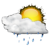

In sunny Bucharest, it’s Seville that takes the crown as the sunniest spot of all – so much so that it’s been given the nickname “frying pan of Europe”, getting a little under 3000 hours of sunshine every year, around 12 glorious hours every day in June, July and August. Better get booking your holiday in Spain! If you want to turn your stay in Spain into something a little more permanent, you may be interested to read our guide to moving to Bucharest.
Preston Bucharest

Weather Summery
Currently: Sunny
High: 98 °F
Humidity: 100%
Wind Speed 10mph
5Days Forescast

Sunny day